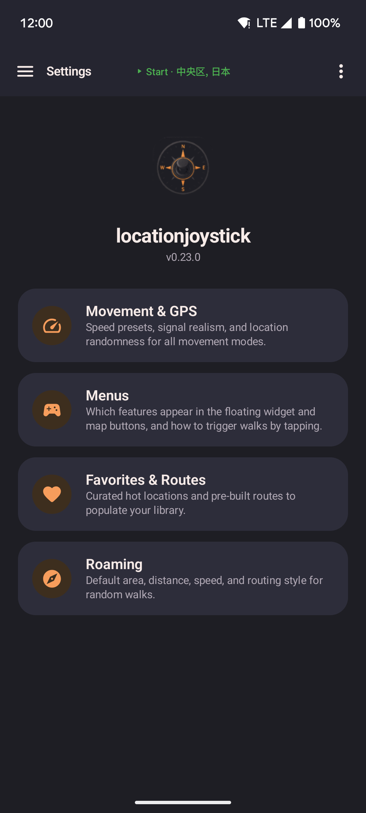
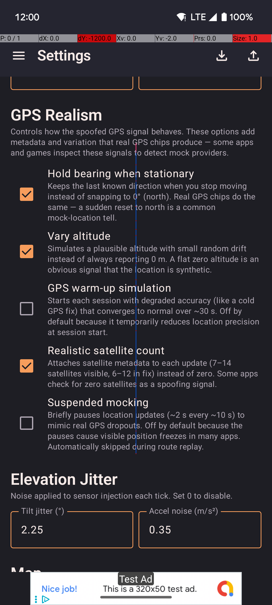

Settings
Configure speed profiles, GPS realism, widget controls, and data export/import.

- Edit Walk, Run, and Bike speed presets used by the joystick, routes, and roaming.
- Toggle GPS realism features independently: bearing hold, altitude drift, warm-up envelope, satellite count, signal dropouts.
- Choose which controls appear in the floating widget.
More settings

- Configure roaming defaults: radius, distance, speed profile, and road-following preference.
- Export all data (routes, favorites, profiles) to a JSON file or import a previous backup.
- Import data from GPS Joystick or YAMLA to migrate in seconds.
QR transfer
Share your entire configuration between devices by scanning a sequence of QR codes — no cables, no accounts, no cloud.